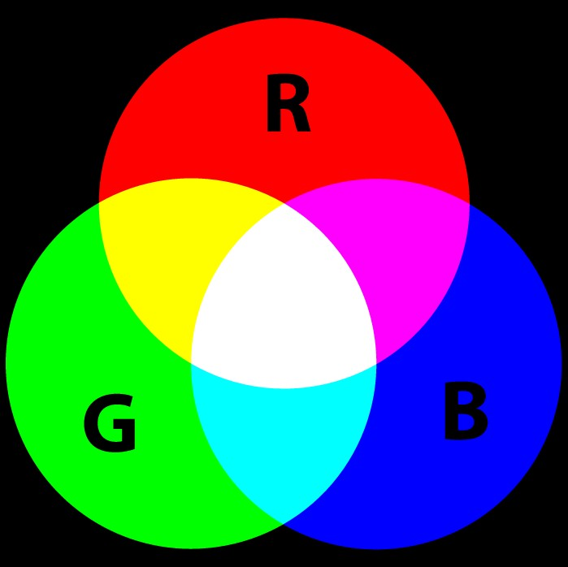
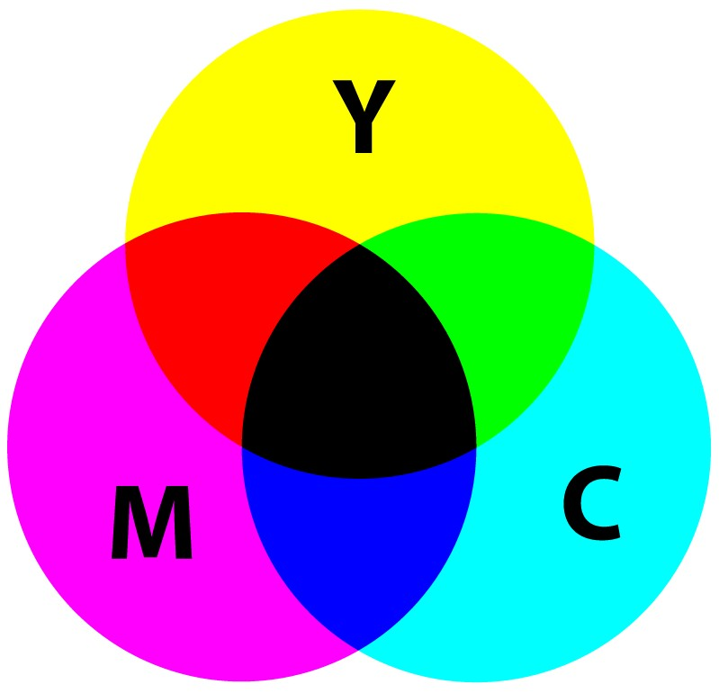
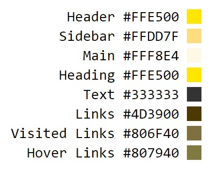

是通过眼、脑和我们的生活经验所产生的一种对光的视觉效应。
人对颜色的感觉不仅仅由光的物理性质所决定，比如人类对颜色的感觉往往受到周围颜色的影响。有时人们也将物质产生不同颜色的物理特性直接称为颜色。
色彩心理学
暖色
- 红色：显示警告或错误或者强调，唤起用户注意
- 橙色：橙色中的红色元素对大脑有刺激作用
- 黄色：很多APP用渐渐消失的黄色来提示用户成功了
中性色
- 黑色：威信和优雅，使用得当很有冲击力
- 白色：适合干净的网站，可以无趣，也可以烘托其它元素
- 棕色：激发饥饿感，同时在网页上会显得有点脏
- 米色：适合背景色，显得冷静，突出其它元素
- 灰色：比较中性化的颜色，很多场合都适合
冷色
- 蓝色：让用户感觉到很放松
- 绿色：如果运用得当，让用户缓和
- 紫色：大量的紫色会让用户不舒服
配色方案
如何做出一套色彩搭配的网页呢？
首先了解相关术语
- 色轮：色轮由 12 种基本的颜色组成。首先包含的是三原色（ Primary colors ），即蓝、黄、红。原色混合产生了二次色（ Secondary colors ），用二次色混合，产生了三次色（ tertiary colors ）
- 原色：红色、蓝色、黄色
- 辅助色（二次色）：把原色混合在一起，得到辅助色：橙色、绿色、紫色
- 第三颜色（三次色）：由一个原色和一个辅助色混合组成
- 色调（Hue）：我们通常看到一个物体的颜色
- 饱和度（Saturation）：是指色彩的纯度，越高色彩越纯，低则逐渐变灰，取0-100%的数值
- 亮度（Lightness）：变亮或变暗，取0-100%
色轮
- 
- 

说了这么多颜色的理论，
那么我们在开发中如何去运用？
（参考文章：在设计中用正确的颜色）
- 单色方案
- 相似色方案
- 互补色方案
- 分离互补色方案
- 自然法配色方案
搭配好之后，就像这样

currentColor关键字
currentColor是指：当前的标签所继承的文字颜色CSS3里面新增的一个比较好玩且强大的关键字；
CSS中有很多属性就有默认的currentColor的表现，我们无需再加上此关键字，比如border，我们在为它设置color的时候，自带地border的颜色也是刚才设置的。
颜色关键字
从CSS1-CSS3，颜色关键字也经历了很大的发展，从最开始CSS1的black、white等16个，到CSS2的orange，然后再到CSS3的时候，一些奇奇怪怪的颜色关键字充斥在我们面前。除非是为了快速开发原型，否则不建议使用CSS颜色关键字，因为它们都是英文单词，首先对于非英语母语者造成理解困难；其次，颜色的语义化并不准确，比如grey比darkgrey更深一些；再次，有些颜色关键字会遇到某些无法识别该颜色的关键字（比如：rebeccapurple），就会解析错误；最后，我们现在有这么多提供颜色表示的方式，足以替代它。
CSS色彩模式
- HEX
- RGB
- HSL
CSS颜色表示法
| 属性 | 版本 | 兼容 | 写法 |
| HEX | CSS1 | * | #000 or #00ffff |
| RGB | CSS2 | * | rgb(128, 128, 128) |
| RGBA | CSS3 | !IE6-8 | rgba(0, 0, 0, .5) |
| HSL | CSS3 | !IE6-8 | hsl(360, 50%, 50%) |
| HSLA | CSS3 | !IE6-8 | hsla(360, 50%, 50%, .5) |
HSL 指的是 hue（色调）、saturation（饱和度）、lightness（亮度）- 表示颜色柱面坐标表示法。
Hue 是色盘上的度数（从 0 到 360） - 0 (或 360) 是红色，120 是绿色，240 是蓝色
Saturation 是百分比值；0%表示的是一个灰度，不使用任何的色彩，而100%是全彩，表示充分使用一个颜色。
Lightness 同样是百分比值；0% 是黑色，100%是白色。
P.S. HSLA只是多了一个Alpha通道
P.P.S. 劣势：不能完全兼容IE；优势：1、符合人对颜色的最直接的感知；2、特别适合一些对颜色没有很大把握的开发者；3、HSL在表达明度比RGB要更准确；4、HSL可以和CSS3动画更好地配合
为了尽可能简单地使用颜色，按下列表来排序：
- HSL值
- RGB值
- 十六进制（使用小写并尽可能简写）
HSL表示法不仅仅是最易于理解的颜色表示方法，而且也便于开发者通过调整色调、饱和度和亮度来惊喜地调整颜色。
相比于 HSL 表示法，RGB 表示法的优势在于表示近似红绿蓝的颜色时更加简洁明了，但是表示红绿蓝的混合色时就不如 HSL 表示法更易于理解了。
最后，十六进制对于人类的思维来说是比较难以理解的，除非必要，否则请优先考虑前几种方式。
P.S. 如果考虑到IE8及其以下的兼容，暂时放弃HSL吧（除了用sass）。当然历史的滚滚洪流会逐渐向前。